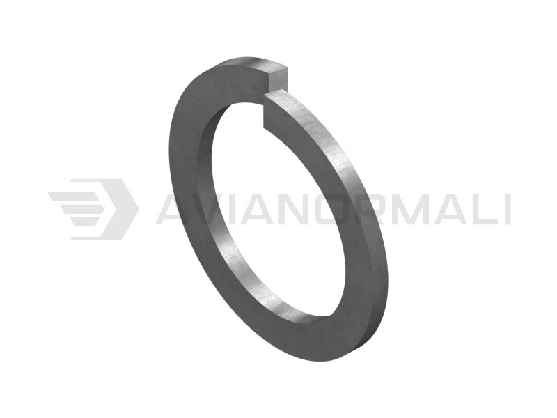

Шайба гровер (пружинная) ГОСТ 6402-70

Размеры: под резьбу М2 – М48, типы Л, Н, Т, ОТ
Покрытия: Ц (цинковое), Кд (кадмиевое), Хим.Окс, без покрытия
Материал: Сталь 65Г, 70, 3Х13
Размеры: под резьбу М2 – М48, типы Л, Н, Т, ОТ
Покрытия: Ц (цинковое), Кд (кадмиевое), Хим.Окс, без покрытия
Материал: Сталь 65Г, 70, 3Х13

Размеры: Под резьбу М2 – М24
Покрытия: Кд (кадмиевое), Ц (цинковое), Хим.Окс
Материал: Сталь 20, 30ХГСА, сплав Д16Т

Размеры: под стержень Ø6 – Ø48 мм
Покрытия: Хим.Окс.прм, Ц (цинковое)
Материал: Сталь 45